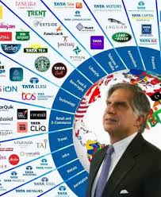

About Ratan Tata
Ratan Tata, born on December 28, 1937, is an Indian industrialist, philanthropist, and former chairman of the Tata Group. Under his leadership, Tata Group expanded globally and contributed significantly to India's development. He is renowned for his humility, ethics, and visionary leadership.